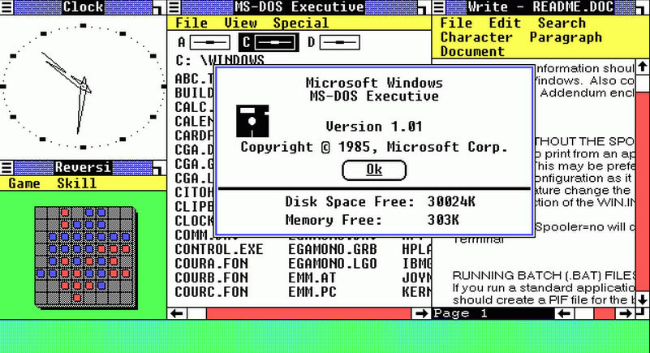

Windows 1.0
Ноябрь 1985

На момент первого релиза Windows была далека от той полноценной операционной системы, которая нам сегодня хорошо знакома. Раньше это была просто «операционная среда» для MS-DOS. И её почти назвали Interface Manager.
Несмотря на простоту, первая версия Windows уже содержала множество инновационных инструментов: графический редактор Windows Paint, текстовый процессор Windows Write, и, разумеется, легендарную настольную игру Reversi.